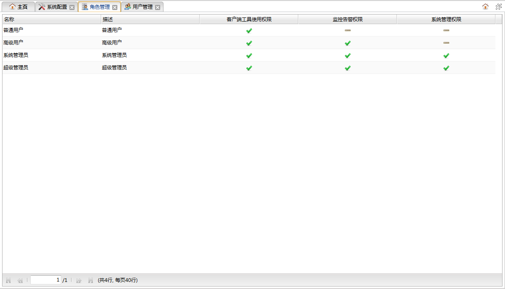

表示有权限，表示没有权限。表示有权限，表示没有权限。表示有权限，表示没有权限。
表示有权限，表示没有权限。表示有权限，表示没有权限。表示有权限，表示没有权限。双击主页左侧导航树的角色管理节点可以打开角色管理面板。该页面用于角色类型及其权限的查看。只有系统管理员才有权限打开该面板。角色类型都为内置类型，不能进行增删改。如下图所示:

系统内置了四种角色类型：
1.超级管理员：拥有系统全部权限，系统中初始化时内置了一个超级管理员用户admin。2.系统管理员：同时拥有系统管理、监控告警、客户端工具使用权限。3.高级用户：拥有监控告警、客户端工具使用权限。4.普通用户：只拥有客户端工具使用权限。
角色信息列表
表中为系统中所有角色的权限信息列表。
| 字段 | 说明 |
|---|---|
| 名称 | 角色名称 |
| 描述 | 角色描述 |
| 客户端工具使用权限 | 角色是否有使用客户端工具（主页左侧客户端工具模块）的权限。表示有权限，表示没有权限。 |
| 监控告警权限 | 角色是否有使用监控告警（主页左侧监控及告警模块）的权限。表示有权限，表示没有权限。 |
| 系统管理权限 | 角色是否有系统管理（主页左侧系统管理模块）权限。表示有权限，表示没有权限。 |